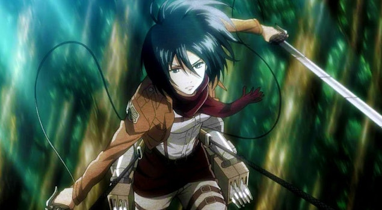
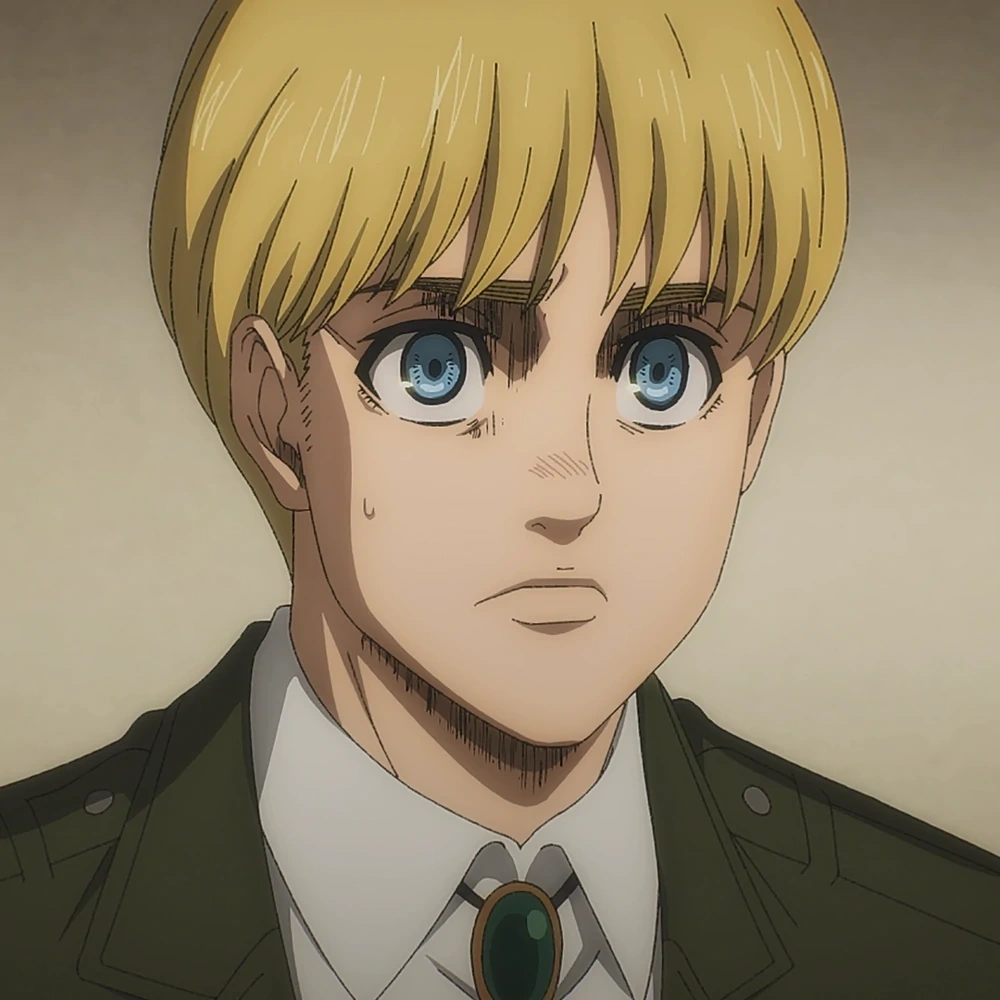
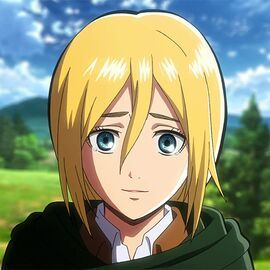
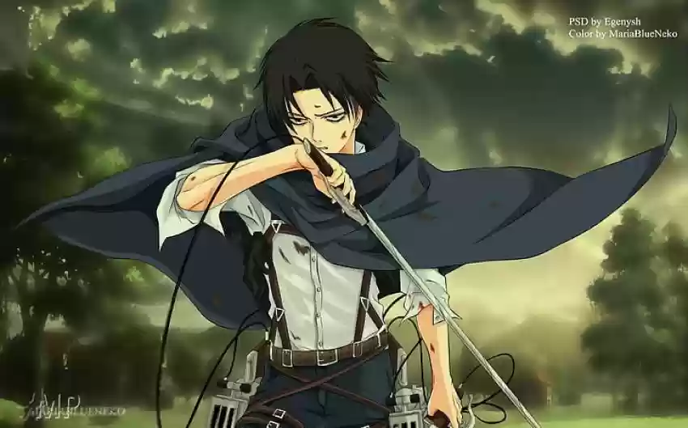
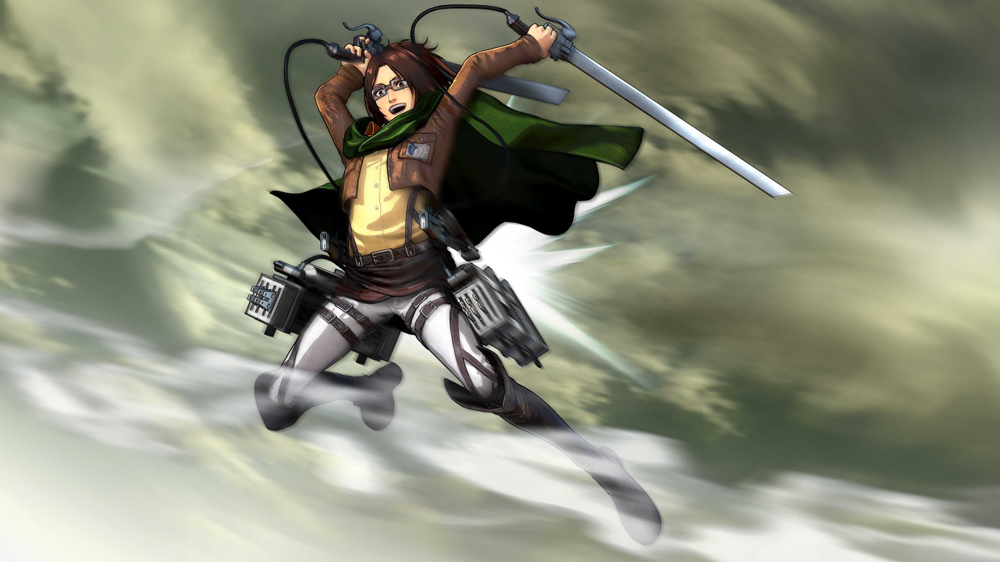
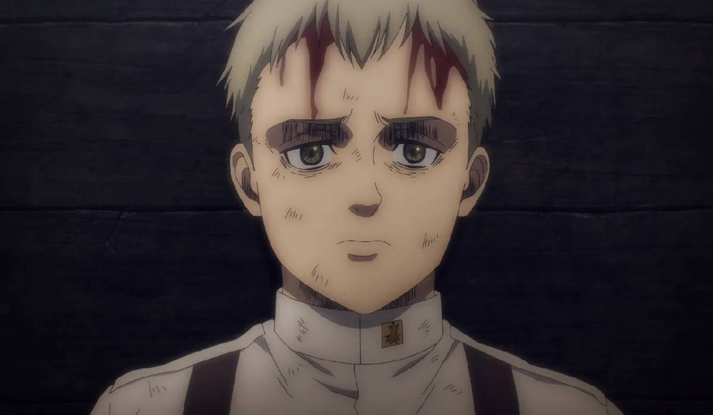
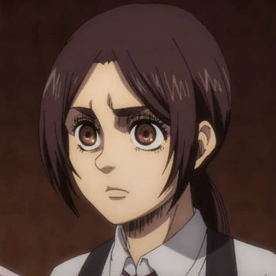

Protagonistas
1.Eren Yager: de la historia e hijo de Grisha y Carla Jaeger. Es una persona testaruda e impulsiva, pero con un fuerte sentido de lealtad y deseo de proteger y cuidar a sus seres queridos. Tras perder a su madre a manos de los titanes, se une al ejército con el único propósito de vengarse, pero cuando descubre sus poderes de titán, decide usarlos en defensa de la humanidad. Se graduó en quinto lugar de la promoción de la Tropa de Reclutas N.º 104 y posteriormente se unió a la Cuerpo de Exploración. Eren posee las habilidades del titán de ataque, el titán fundador ―ambos adquiridos de su padre― y el titán martillo de guerra, que obtuvo en el ataque a Marley. En la adaptación japonesa su seiyū es Yūki Kaji, mientras que en el doblaje español es Jaume Aguiló y en el hispanoamericano es Miguel Ángel Leal.

2.Mikasa Akerman:Es la hermana adoptiva de Eren, con quien mantiene un fuerte vínculo desde que la salvó de unos secuestradores que mataron a sus padres y pretendían venderla como esclava, lo que contribuyó a un cambio radical en su personalidad, al volverse más reservada y menos alegre. Después de la caída de Shiganshina decidió, junto con Eren y Armin, unirse al ejército, donde se graduó primera en la Tropa de Reclutas N.º 104 debido a sus grandes habilidades. Posteriormente, se unió al Cuerpo de Exploración para combatir a los titanes con el objetivo de proteger a su hermano adoptivo. Más adelante, participó en el ataque a Marley, pero se muestra decepcionada por el cambio de actitud de Eren. En la adaptación japonesa su seiyū es Yui Ishikawa, en el doblaje español es Laura Prats,28 mientras que en Hispanoamérica es interpretada por Ana Lobo.

3.Armin Arlet:Es un amigo de la infancia de Eren y de Mikasa. Físicamente es más débil que el resto de sus compañeros, pero demuestra una gran inteligencia a través de su capacidad estratégica y soluciones rápidas cuando la situación lo amerita. Se graduó en la Tropa de Reclutas N.º 104 y más tarde se unió al Cuerpo de Exploración. Durante la batalla para retomar la muralla María, casi muere al ser quemado con el vapor emitido por Bertoldt Hoover en su forma de titán colosal. Para salvarlo, se le inyectó un suero que lo transformó en titán común y terminó por devorar con vida a Bertoldt, por lo que se convirtió en el nuevo titán colosal. Más adelante participó en el ataque a Marley, a partir de lo que empieza cuestionar las acciones de Eren. En la adaptación japonesa su seiyū es Marina Inoue, mientras que en el doblaje español es Marc Gómez y el Hispanoamericano es Héctor Ireta de Alba.

4.Christa Lenz:Es la hija ilegítima del noble Rod Reiss y única miembro de la familia real Reiss que sigue con vida. Se graduó décima en la Tropa de Reclutas N.º 104 y posteriormente se unió a la Legión de Exploración. Es una chica amable, dispuesta a hacer una buena acción sin importar el precio, aunque demuestra ser tímida y no saber cómo reaccionar en ciertas situaciones. Con la ayuda de sus amigos, quienes orquestan un golpe de Estado en el reino, se convierte en la nueva gobernante de las murallas, en donde gobierna con justicia y en favor de los más necesitados. En la adaptación japonesa su seiyū es Shiori Mikami, mientras que en el doblaje español es Mireia Fontich y en Hispanoamérica es Cristina Hernández.

5.Levi Ackerman:Es el capitán de la Legión de Exploración y se lo considera «el soldado más fuerte de la humanidad», debido a sus grandes habilidades para matar titanes. Siente un gran respeto por la disciplina y tiene carácter firme, ideas claras y personalidad seria, además de gran fidelidad y respeto a su comandante, Erwin Smith. Antes de unirse a la Legión de Exploración, era un delincuente famoso en la zona subterránea de la capital, pero fue rescatado por su tío, Kenny, quien lo entrenó y le enseñó a sobrevivir en ese mundo tan cruel. En la adaptación japonesa su seiyū es Hiroshi Kamiya, mientras que en el doblaje español es Héctor García y en el Hispanoamericano es Alfredo Gabriel Basurto.

6.Hange zoë:Fue la 14.º comandante de la Legión de Exploración, quien sucedió a Erwin Smith después que este muriera en la batalla por recuperar la muralla María. Es una persona muy apasionada por su trabajo, el cual consiste en investigar a los titanes, además de tener una personalidad hiperactiva y curiosa, para irritación de Levi. También, es una experta combatiente capaz de vencer a un titán sin mayores problemas, además de poseer grandes habilidades de análisis durante situaciones difíciles que le valieron su puesto de líder de la Legión. Sin embargo, después del ataque a Marley, se considera incapaz de entender las acciones de Eren. En la adaptación japonesa su seiyū es Romi Park, en el doblaje español Pepa Pallares,28 mientras que en Hispanoamérica es Rossy Aguirre.

7.Falco grice:Es un eldiano que vivía en la zona de internamiento de Liberio quien, junto con Gabi Braun, protagoniza la temporada final del anime. Al igual que su hermano mayor, Colt, es un candidato a guerrero que busca adquirir el titán acorazado de Reiner. Es un jovenamable y reflexivo que está enamorado de Gabi, a quien busca proteger de la maldición de Ymir. Fue indirectamente responsable del ataque de Eren a Marley, al ser engañado por este. En la adaptación japonesa su seiyū es Natsuki Hanae, y en el doblaje hispanoamericano es Diego Becerril.

8.Gabi Braun:Es una eldiana que vivía en la zona de internamiento de Liberio en Marley, prima de Reiner Braun. Es protagonista de la temporada final del anime junto con Falco Grice, quien está enamorado de ella. Como candidata a guerrera, posee una personalidad explosiva, un fuerte sentido de patriotismo y, gracias a la propaganda de Marley, un odio virulento hacia los eldianos de la isla Paradis. Sobrevive al ataque de Liberio realizado por Eren y es capturada junto con Falco después de matar a Sasha Braus. Una vez que llega a Paradis, empieza a cuestionar su forma de pensar. En la adaptación japonesa su seiyū es Ayane Sakura, y en el doblaje hispanoamericano es Danann Galván.